精彩剧情
《海绵宝宝》（SpongeBob SquarePants）是一部由史蒂芬·海伦伯格原创，舍曼·科恩、沃特·杜赫、山姆·亨德森、保罗·蒂比特、沃尔特·道恩等导演，汤姆·肯尼、比尔·法格巴克、罗杰·布帕斯等配音的美国喜剧动画，于1999年7月17日在尼克国际儿童频道开播。
《海绵宝宝》的故事情节主要围绕着主角海绵宝宝和他的好朋友派大星、邻居章鱼哥、上司蟹老板等生物展开，场景设定于太平洋海底，一座被称为比奇堡的城市。2005年1月30日，该片荣获第32届安妮奖授予的“最佳TV动画制作”奖。
这部动画除了固定描绘的卡通场景与人物之外，也会穿插一些真实的物件或人物：例如曾出演《海滩游侠》与《霹雳游侠》的大卫·哈塞尔霍夫，以本人的身份出演了几集。但海绵宝宝卡通的内容基本上与海洋知识无关，甚至夸大到完全不合乎科学与常识，例如海底生火、海底冲澡等，剧集内容也会时不时的嘲笑精致艺术和章鱼哥的劳工权益想法。
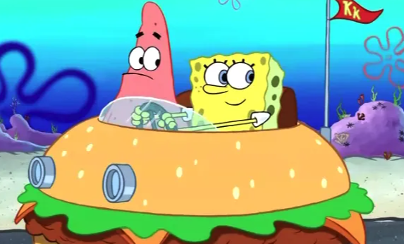
《海绵宝宝》的故事情节主要围绕着主角海绵宝宝和他的好朋友派大星、邻居章鱼哥、上司蟹老板等生物展开，场景设定于太平洋海底，一座被称为比奇堡的城市。2005年1月30日，该片荣获第32届安妮奖授予的“最佳TV动画制作”奖。
这部动画除了固定描绘的卡通场景与人物之外，也会穿插一些真实的物件或人物：例如曾出演《海滩游侠》与《霹雳游侠》的大卫·哈塞尔霍夫，以本人的身份出演了几集。但海绵宝宝卡通的内容基本上与海洋知识无关，甚至夸大到完全不合乎科学与常识，例如海底生火、海底冲澡等，剧集内容也会时不时的嘲笑精致艺术和章鱼哥的劳工权益想法。
角色介绍
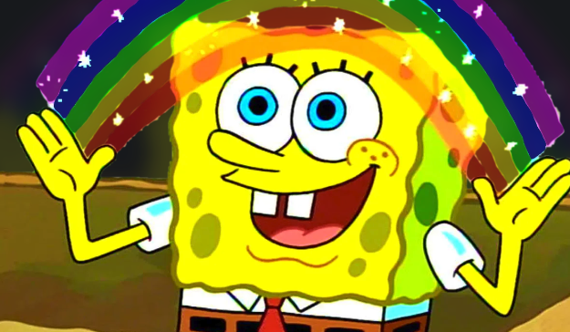
海绵宝宝（英文名称：SpongeBob SquarePants），出自美国动画《海绵宝宝》及其衍生相关作品中的主人公。
生活在太平洋海底一座被称为比奇堡的城市，身份是蟹堡王餐厅的高级厨师。黄色长方形海绵，其身体构成如同清洁用海绵。拥有两只手，各四根手指。以棕色短裤、白色衬衫和红色领带为主要服装。身体如果被破坏皆可恢复原状。虽然有正常进食，但纯滤食海水也能继续存活。
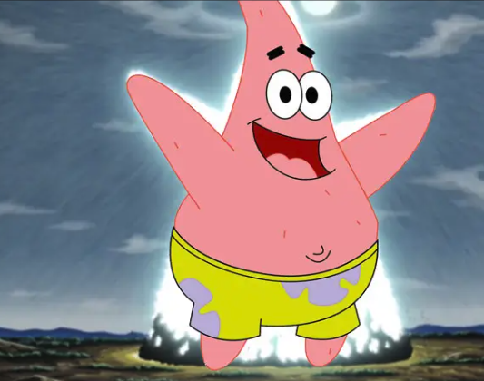
派大星（英文名称：Patrick Star，阿拉伯语：باتريك、俄语：Патрик）是美国动画片《海绵宝宝》系列中的主人公之一，也是海绵宝宝的好朋友。他是一只粉红色的海星，说话嗓音粗，头脑简单，四肢发达，常给大家制造麻烦，在睡觉或发呆时还会不停的流口水。他居住在自己精心打磨的石头下面，在关键时刻会想出绝妙的点子，但下一秒就已经遗忘，可是在动画片中他却是说出最多饱含深意的话的人物。
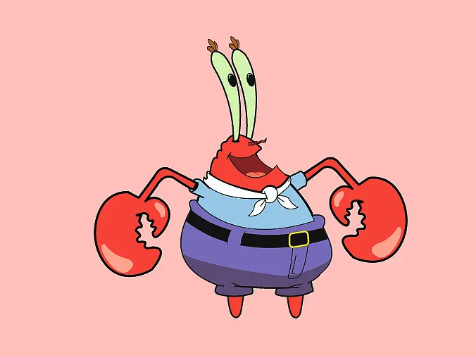
蟹老板（英文名称：Captain Eugene H. Armor Abs Krabs）原名蟹阿金，蟹老板是美国动画片《海绵宝宝》中的角色，是一只螃蟹，蟹堡王餐厅的老板，本名阿金。此角色视钱如命，非常贪婪，曾因为一毛钱逼得章鱼哥辞职，为了六毛二分钱把海绵宝宝卖给了飞行荷兰人，曾经在《八卦报》一集制造过假钞，曾经也为了钱和痞老板争先恐后给居民喂地沟油，是个不折不扣的正面角色里的反面教材。
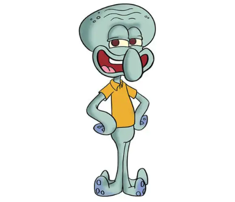
章鱼哥（英文名称：Squidward Tentacles）是美国动画片《海绵宝宝》中的动画角色。一只大鼻子秃脑门章鱼。认为海绵宝宝和派大星很幼稚。相当自恋，有一定的艺术才能但却从未得到赏识，并对艺术有执着的追求。本质上还是一个善良且有正义感的章鱼。
章鱼哥是光头，但曾有过黄色长卷发，并希望头发再长回来。居住在一栋仿复活节岛人像的房屋。担任蟹堡王餐厅的收银人员，但并不喜欢自己的工作，希望能成为一名举世闻名的艺术家。
图片鉴赏
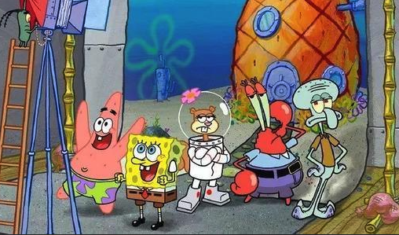
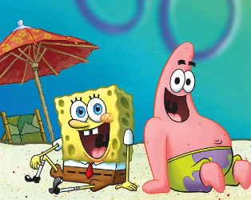
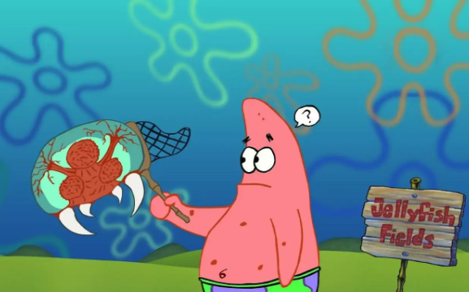
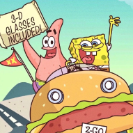
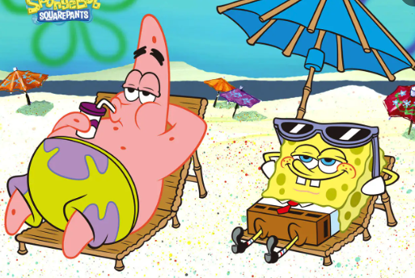
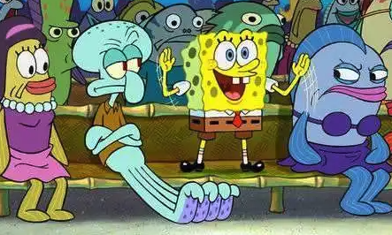